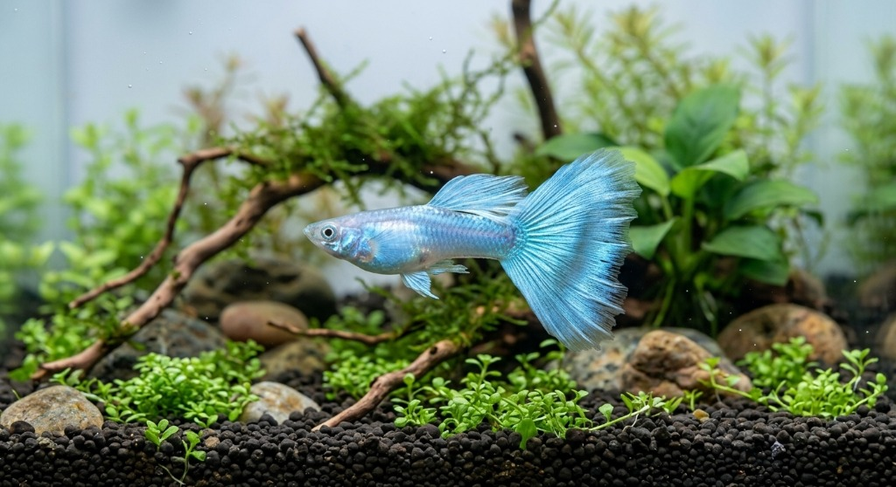

Akvaryum Bilgisi
Canlı Havuzu
🌡️ 25°C
💧 pH 7.2
🔍 Akvaryumdaki Canlılar (Detay için dokunun):

Lepistes (İthal Özel Irklar)
Poecilia reticulata • Poeciliidae
Min. 40 L
Boyut: 4 - 6 cm
Ömür: 2 - 3 Yıl
Akvaryum dünyasının en popüler canlı doğuran balığıdır.
Bitkili Tank Uyumu:
Bitki Dostu 🟢
Karakter / Agresyon:
Barışçıl 😇
Yüzme Alanı:
Orta & Yüzey ↗️
Deneyim Seviyesi:
Yeni Başlayan 🟢
Sıcaklık
22 - 28 °C
pH Değeri
6.8 - 8.5
Sertlik
10 - 28 dGH
Sürü / Sosyal
Grup halinde
🤝
Hangi Balıklarla Yaşar? (Uyum Rehberi)
✓ Birlikte Sorunsuz Yaşadığı Canlılar:
✕ Aynı Akvaryuma Konulmaması Gerekenler:
💡 Uyum Kuralı: Yeni canlıları tankınıza eklerken mutlaka poşet alıştırması yaparak ısı ve su değerlerini eşitleyiniz.
🍽️
Önerilen Yem ve Sağlık / Bakım Ürünleri
🍽️ Bu Canlı İçin En İdeal Yemler (Mağazamızda Mevcut):
💊 Tavsiye Edilen Su Şartlandırıcı & Bakım Ürünleri:
Detaylı Canlı Ansiklopedisi:
Akvaryum & Ekipman Rehberi
Erkek & Dişi Ayrımı
Üreme & Yavru Alma
Sık Görülen Hastalıklar & Tedavi
Fotoğraflı Safkan Varyeteler
🐠 AquaTrend Akvaryum • Sağlıklı Canlı & Doğru Bakım Rehberi